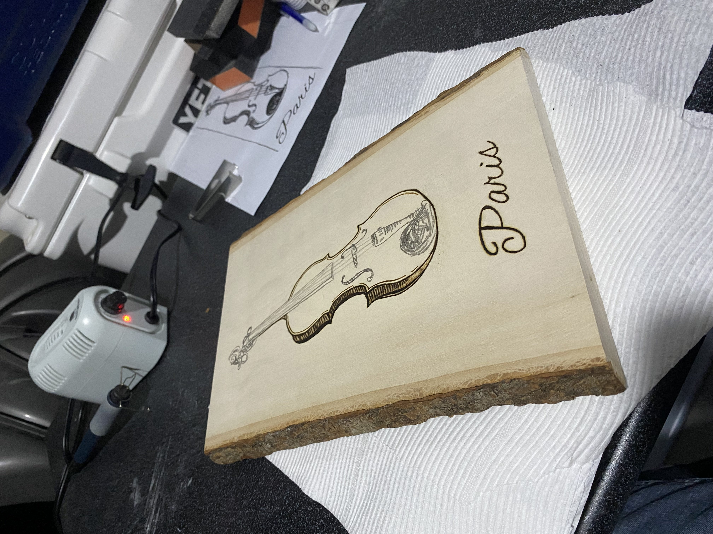
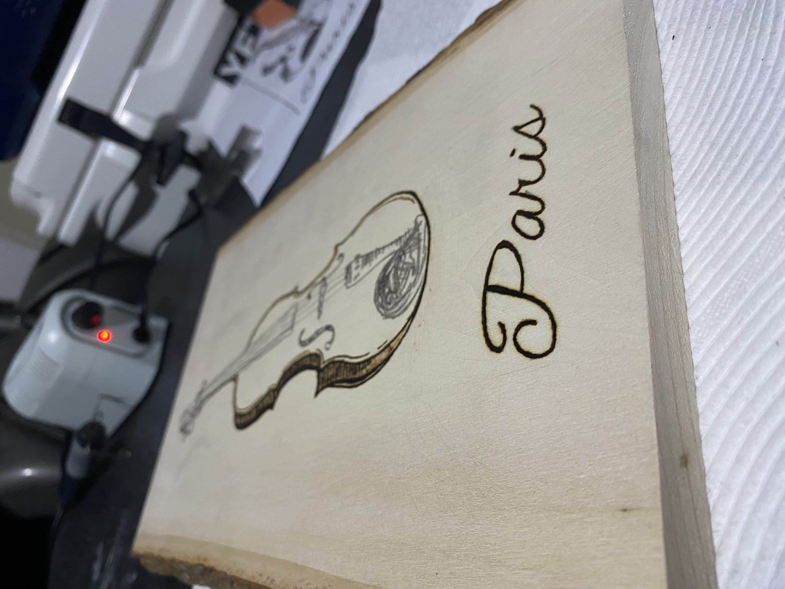
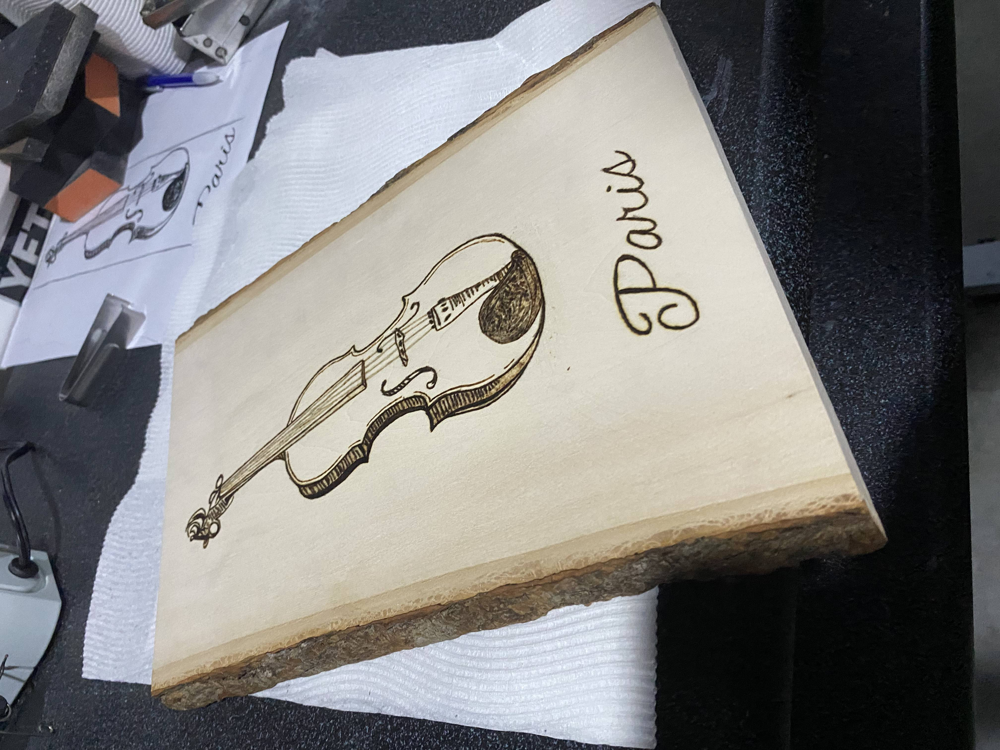

How to Create a Woodburning
Burn
- Start with an outline. Whether for text or the design.
- Go in and tackle any shading either with flatter tips or hatching.
- Depending on the design, you may need to go in and burn over certain areas multiple times for greater detail.
Note: It’s just like drawing, just with a really, really hot pencil. If you need to change the tip, turn off the machine and let it cool.


